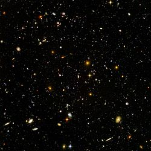
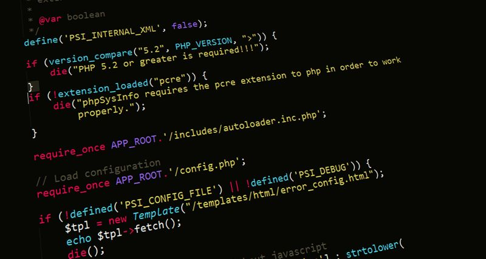
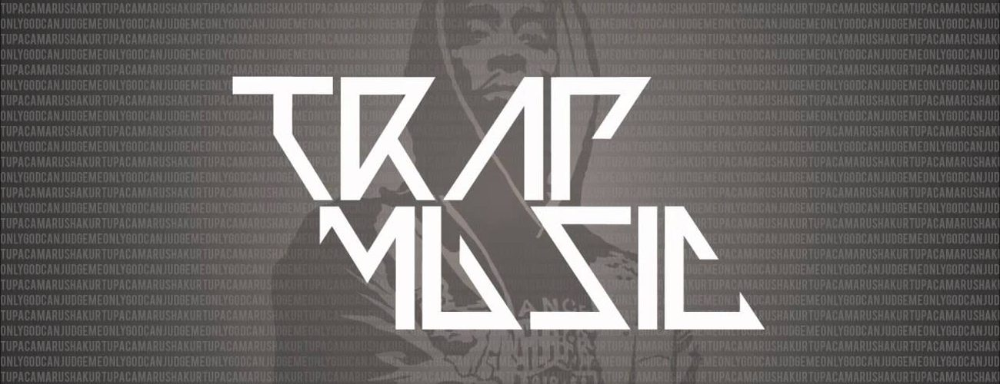
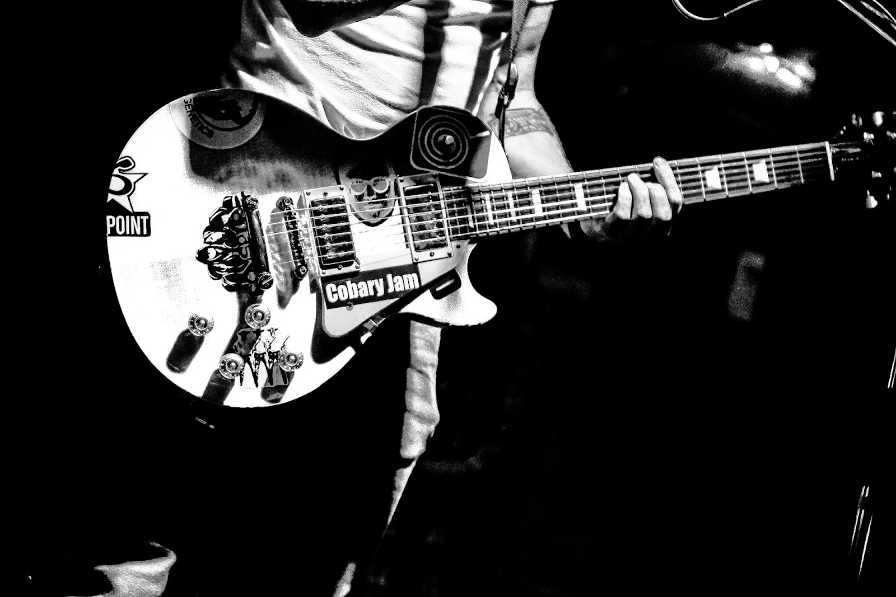
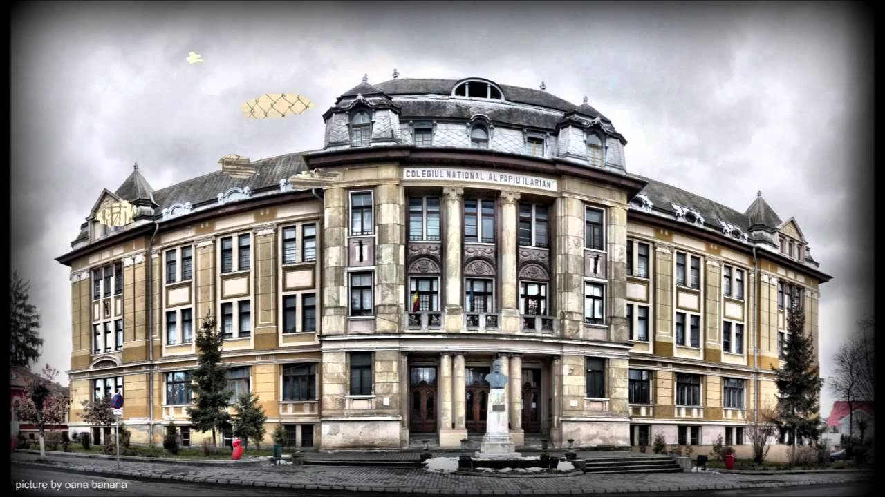

Mai exact sunt pasionat de o mulțime de lucruri precum:
- Cunoașterea în detaliu a universului 
- Programarea și utilizarea calculatorului 
- Genuri de muzică, cum ar fi:
- Hip-Hop/Rap
- R&B/Soul
- Trap 
- Rock alternative 
Sunt din Tîrgu Mureș unde studiez matematica
informatica la Colegiul Național Al.Papiu Ilarian, o
instituție foarte renumită în județ. Deși mă aflu abia la
început de drum, mai exact în primul an de liceu, pot spune
că am învățat o mulțime de lucruri de care sunt sigur că mă vor ajuta în viitor.
Vă invit să vizitați pagina colegiului pentru mai multe detalii... 